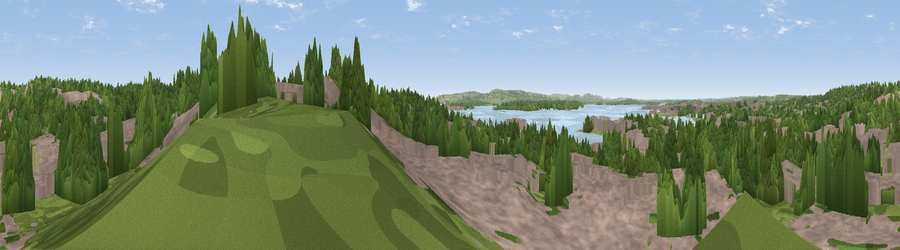

Blake Hill Viewpoint
#30547 in England · top 54% of its area beats it · near PooleThe view, rendered

A 360° render of this exact spot computed from the terrain model, tree cover and land cover — summer colours, afternoon light, calibrated against photographs of famous viewpoints. Real trees, hedges and buildings will differ in detail.
The panorama
Grey silhouette: terrain skyline in each direction (720 bearings, Earth curvature and refraction included). Dashed green: skyline with trees (+15 m) and buildings (+8 m) as obstacles. Blue strip: how far the ground is visible on each bearing.
Where the view opens
Wedge length = distance to the farthest visible ground on that bearing (vegetation-aware). Rings at 10, 25 and 50 km.
What fills the view
42% woodland · 42% built-up · 8% water · 7% grassland
Angular shares of the visible panorama (visual magnitude), not map area. Landscape diversity 0.50 (0–1 Shannon).
Key numbers
More beautiful places nearby
The staircase of upgrades: each row has a higher view potential than everything closer. Driving times are estimates from straight-line distance, calibrated against real road routing — check an actual route before setting out.
| Place | Direction | Drive | Score |
|---|---|---|---|
| Seaview | NNW · 2 km | ~5 min | 43.7 |
| Viewpoint near Poole | NNW · 2 km | ~6 min | 55.7 |
| Viewpoint near Merley | N · 6 km | ~13 min | 59.5 |
| Viewpoint near Corfe Mullen | NW · 7 km | ~15 min | 60.9 |
| Viewpoint near Studland | S · 9 km | ~17 min | 62.6 |
| Viewpoint near Studland | S · 9 km | ~18 min | 80.9 |
| Viewpoint near Studland | S · 9 km | ~18 min | 82.2 |
| Ballard Down | S · 9 km | ~18 min | 83.2 |
50.71383, -1.94417 · source: osm viewpoint · position refined by local search. Computed location — check access rights before visiting.